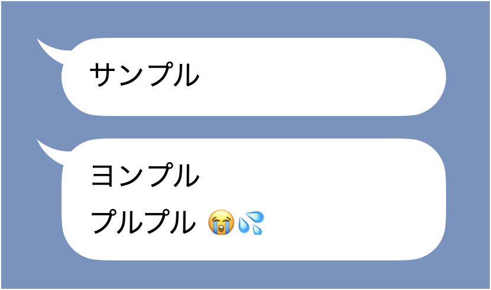

<!DOCTYPE html>
<html>
  <head>
    <title>My experiment</title>
    <meta charset="UTF-8" />
    <script src="jsPsych-6.3.1/jspsych.js"></script>
    <script src="jsPsych-6.3.1/plugins/jspsych-instructions.js"></script>
    <script src="jsPsych-6.3.1/plugins/jspsych-survey-multi-choice.js"></script>
    <script src="jsPsych-6.3.1/plugins/jspsych-survey-html-form.js"></script>    
    <script src="jsPsych-6.3.1/plugins/jspsych-survey-text.js"></script>    

    <script src="jspsych-affect-grid/jspsych-affect-grid.js"></script>

    <link href="jsPsych-6.3.1/css/jspsych.css" rel="stylesheet" type="text/css" />
  </head>
  <body></body>
  <script>

  var timeline = [];    

  var affect_grid={
    type: 'affect-grid',
    custom_label: true,
    grid_square_size: 25,
    label_name: {
      arousal: "覚醒",
      sleepiness: "睡眠",
      pleasant: "快",
      unpleasant: "不快",
      stress: "緊張",
      excitement: "興奮",
      depression: "落ち込み",
      relaxation: "リラックス"
    }
	};

  var nenrei = {
    type: 'survey-html-form',
    preamble: '<p>あなたの年齢をお答えください。</p>',
    html: '<input type="number" required>',
    button_label:'次へ',
  };

  var seibetsu = {
    type: 'survey-multi-choice',
    questions: [
      {
        prompt: '<p>あなたの性別をお答えください。</p>',
        name: 'FriendCloseness',
        options:['男','女','その他','答えたくない'],
        required: true
      }
    ],
    button_label:'次へ',
  };

  var hajimeni = {
    type: 'instructions',
    pages: [
      'この調査は〜（ここに調査趣旨の説明）。',
    ],
    allow_backward: false,
    button_label_next:'次へ',
    show_clickable_nav: true,
  };

  
  var shitashisa = {
    type: 'survey-multi-choice',
    questions: [
      {
        prompt: '<p>普段，メッセージ（LINEなど）でよくやり取りする相手を一人，思い浮かべてください。<br />その相手とあなたはどの程度親しいですか？</p>',
        name: 'FriendCloseness',
        options:['とても親しい','少し親しい','どちらともいえない','あまり親しくない','まったく親しくない'],
        required: true
      }
    ],
    button_label:'次へ',
  };

  var emoji1 = {
    type: 'survey-multi-choice',
    questions: [
      {
        prompt: '<p>その相手は，あなたとの普段のやりとりでどの程度「絵文字」や「顔文字」を使用しますか？</p>',
        name: 'EmojiAite',
        options:['いつも使う', 'よく使う','ときどき使う','まれに使う','まったく使わない'],
        required: true
      }
    ],
    button_label:'次へ',
  };

  var emoji2 = {
    type: 'survey-multi-choice',
    questions: [
      {
        prompt: '<p>では，「あなた」はその相手とのやりとりで，普段どの程度「絵文字」や「顔文字」を使用しますか？</p>',
        name: 'EmojiJibun',
        options:['いつも使う', 'よく使う','ときどき使う','まれに使う','まったく使わない'],
        required: true
      }
    ],
    button_label:'次へ',
  };

  var AGsetsumei = {
    type: 'instructions',
    pages: [
      'これから〜（ここにアフェクト・グリッドの説明）。',
    ],
    allow_backward: false,
    button_label_next:'次へ',
    show_clickable_nav: true,
  };

  var KadaiSetsumei = {
    type: 'instructions',
    pages: [
      'これからさまざまな状況でやりとりされるメッセージについての評価を〜それぞれの場面であなたが普段よくやり取りする相手からメッセージが送られてきた場面を〜（課題の説明）。',
    ],
    allow_backward: false,
    button_label_next:'次へ',
    show_clickable_nav: true,
  };

  var affect_grid2={
    type: 'affect-grid',
    custom_label: true,
    grid_square_size: 25,
    label_name: {
      arousal: "活動的な（覚醒）",
      sleepiness: "非活動的な（眠気）",
      pleasant: "快い",
      unpleasant: "不快な",
      stress: "緊張（ストレス）",
      excitement: "興奮（ワクワク）",
      depression: "落ち込み",
      relaxation: "リラックス"
    },
    rated_stimulus: "<p>〜という場面でのメッセージ</p><p><br/>このようなメッセージが送られてきたとき，あなたが感じるであろう感情を，アフェクト・グリッドで示してください。</p>"
	};
  
  var kanjo1 = {
    type: 'survey-html-form',
    preamble: 
      "<p>〜という場面でのメッセージ</p><p><br/>"+
        "このメッセージが送られてきたとき，あなたは次のそれぞれの感情をどの程度感じると思いますか。「0：まったく感じない」から「4：強く感じる」までの数字のうち，もっとも近いものを1つずつ選んでください。</p>",
    html: "<p>嬉しい　　　<input type='radio' id='pos1' name='ure' value='1' required>0　"+
        "<input type='radio' id='pos1' name='ure' value='1'>1　"+
        "<input type='radio' id='pos1' name='ure' value='1'>2　"+
        "<input type='radio' id='pos1' name='ure' value='1'>3　"+
        "<input type='radio' id='pos1' name='ure' value='1'>4</p>"+
        "<p>気分が良い　<input type='radio' id='pos2' name='kibu' value='1' required>0　"+
        "<input type='radio' id='pos2' name='kibu' value='1'>1　"+
        "<input type='radio' id='pos2' name='kibu' value='1'>2　"+
        "<input type='radio' id='pos2' name='kibu' value='1'>3　"+
        "<input type='radio' id='pos2' name='kibu' value='1'>4</p>"+
        "<p>満足な　　　<input type='radio' id='pos3' name='man' value='1' required>0　"+
        "<input type='radio' id='pos3' name='man' value='1'>1　"+
        "<input type='radio' id='pos3' name='man' value='1'>2　"+
        "<input type='radio' id='pos3' name='man' value='1'>3　"+
        "<input type='radio' id='pos3' name='man' value='1'>4</p>",
    button_label:'次へ',
  };


jsPsych.init({
    timeline: [hajimeni,nenrei,seibetsu,shitashisa,emoji1,emoji2,AGsetsumei,KadaiSetsumei,affect_grid2,kanjo1],
  });
  </script>
</html>